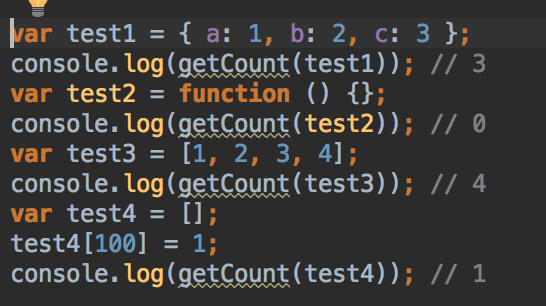
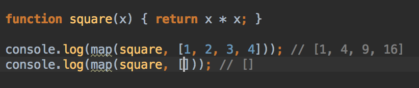

Занятие #14

Вывести количество свойств в объекте
Реализовать функцию getField, которая берет массив объектов и выводит массив запрашиваемых значений
Реализовать функцию создания счетчика createCounter(start, step). Она при вызове возвращает другую функцию-генератор, которая при каждом вызове дает число на 1 больше, и так до бесконечности. Начальное число, с которого начинать отсчет, и шаг, задается при создании генератора. Начальное значение по умолчанию равно 0.
Также дописать функцию pick(counter, x) которая вызвает функцию gen заданное число (x) раз и возвращает массив с результатами вызовов.
Реализовать функцию map(fn, array), которая принимает на вход функцию и массив, и обрабатывает каждый элемент массива этой функцией, возвращая новый массив.
Реализовать функцию filter, которая принимает функцию-предикат и массив. Возвращает она массив значений, для которых предикат вернет true. Функция не должна изменять исходный массив.